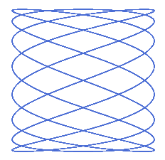
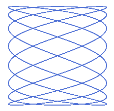

Scratch-Art
Introductie
Naast een leuke achtergrond en het bewegen van de kat van Scratch kun je nog veel meer doen. Je kunt Scratch ook laten tekenen.
Hier zie je een paar voorbeelden van wat je met Scratch kunt:


 

Deze instructie leert je stap-voor-stap vergelijkbare tekeningen te maken.
Benodigdheden
Om de instructie te volgen, heb je naast je computer niets nodig.
Ga naar https://scratch.mit.edu/projects/editor/ om aan de stappen te beginnen.
Stappen
Polygonen
Een polygoon is een ander woord voor een veelhoek. Een veelhoek is een vorm in een plat vlak met een aantal hoeken. Een veelhoek met 3 hoeken is een driehoek. Maar ook een achthoek is een veelhoek. In dit hoofdstuk gaan we veelhoeken tekenen.
Driehoek
- neem 100 stappen om een lijn te tekenen
- draai de pen 120°
Opdracht 1: Maak het voorbeeld eens na en experimenteer eens met het aantal stappen of de hoeken.
Vierhoek
- neem 100 stappen om een lijn te tekenen
- draai de pen 90°
Opdracht 2: Neem je code van de driehoek en pas het aan zodat het een vierkant kan maken.
Opdracht 3: Neem je code van de vierhoek en probeer er eens een vijfhoek van te maken. Wat moet er veranderen?
Misschien valt het je op, dat de stappen voor de driehoek, vierhoek en vijfhoek erg vergelijkbaar zijn. Het aantal herhalingen is gelijk aan het aantal hoeken en de hoek van de te maken draai wordt wordt steeds groter.
Polygoon functie
Bij de vierhoek en vijfhoek zagen we al dat het tekenen ervan vooral bestaat uit herhaling van stappen. Ook is er eigenlijk maar één getalletje dat veranderd; het aantal hoeken.
Om verschillende polygonen te tekenen, is het dus handig om één blokje te hebben waarbij je het aantal hoeken kunt opgeven:
Links staat het nieuwe blok dat polygonen tekent. Rechts staat hoe je het nieuwe blok kunt gebruiken.
Opdracht 4: Maak het voorbeeld na. Wat wordt er getekend?
Opdracht 5: Experimenteer eens wat met het aantal hoeken, wat gebeurt er als je een groot aantal hoeken (20?) kiest?
Opdracht 6: Kun je het volgende figuur maken?
Lissajous functie
Een lissajous is een vorm gemaakt met een wiskundige formule. Het is een combinatie van twee golven.
Met twee getallen (a en b) kan je aanpassen hoe een lissajous eruit ziet.
De code om er een te maken ziet er als volgt uit. Eerst wordt de pen gereset. Dan wordt de lissajous functie aangeroepen met drie waardes: size, a en b (zoals in de afbeelding hierboven te zien) Daarna wordt er elke keer de X en de Y berekent. Hiermee wordt de vorm getekend.

Opdracht 8: Probeer eens rare getallen uit, kijk wat er gebeurt. In de afbeelding staat welke getallen je kan aanpassen.
Opdracht 9: Maak de lissajous kleurrijk, zoals als opdracht 6.
Vervolg
Heb je de smaak te pakken gekregen van het maken van kunst met Scratch? Kijk dan ook naar deze links:
- Scratch art voorbeelden: https://scratch.mit.edu/search/projects?q=kunst
- Scratch kunst voorbeelden: https://scratch.mit.edu/search/projects?q=kunst

Dit werk is gelicenseerd met een Creative Commons Attribution-NonCommercial-ShareAlike 4.0 International License.